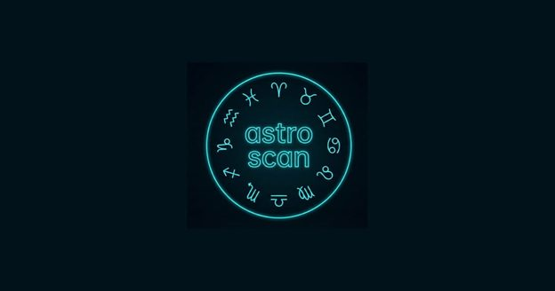

Test Gratis de Arquetipo y Zodiaco Chino — Sin Fecha de Nacimiento
Gratis • Sin registro • Resultados instantáneos. AstroScan es una prueba de personalidad gratuita en línea que determina tu arquetipo de comportamiento y signo del zodíaco chino según tus respuestas. Luego, utilizando cálculos profesionales de efemérides suizas, proporcionamos información sobre compatibilidad. ¿Tienes curiosidad por saber cómo se ve tu carta en diferentes tradiciones astrológicas? Desplázate hacia abajo para comparar los enfoques occidental y védico (Jyotish).
💡 El zodíaco chino te da una idea rápida de tu personalidad y compatibilidad sin necesidad de datos personales. Para un análisis más preciso y personal, visita nuestro bot de Telegram: allí podrás obtener una carta natal de astrología occidental usando tu fecha y lugar de nacimiento, y si añades tu hora exacta de nacimiento, recibirás un informe muy detallado. Dos niveles: una visión general aquí y un análisis profundo en el bot.
Cuestionario de Personalidad Interactivo
🐉 Descubre tu signo del zodíaco chino por año de nacimiento
Sin necesidad de test — solo introduce tu año de nacimiento para una respuesta instantánea.
Nota: el Año Nuevo chino cae entre el 21 de enero y el 20 de febrero. Si naciste en enero o febrero, tu signo podría pertenecer al año anterior — verifica la fecha exacta.
📚 Explora cada signo del zodíaco chino
📡 Tecnología y Tradiciones Astrológicas
AstroScan utiliza el zodíaco tropical occidental y las efemérides suizas profesionales Swiss Ephemeris v2.10. Pero, ¿cómo se ve tu carta en otros sistemas?
🌍 Occidental vs. Védica (Jyotish)
La astrología occidental se basa en el zodíaco tropical (estaciones), mientras que la védica utiliza el zodíaco sideral (estrellas fijas). La diferencia es de unos 24° (Ayanamsha).
⭐️ Estrellas de Telegram
Gasta XTR para acceso de por vida a auditorías. 200 Estrellas ≈ $2.80 USD.
🧑🏫 Para Profesionales
Genera informes white‑label en 2 minutos.
⚡ Elige Análisis
📄 ¿No estás seguro? Primero puedes ver ejemplos de informes en el bot y comprobarlo tú mismo.
🌌 Natal
Sol, Luna, Ascendente
💞 Compatibilidad
Sinastría
💰 Carrera
Carrera y Finanzas
🧸 Infantil
Carta Infantil
❓ Preguntas Frecuentes
🌙 ¿Por qué mi signo lunar se siente diferente a mi personalidad?
La Luna representa tu subconsciente: reacciones y emociones internas que pueden no alinearse con tu yo consciente. Tu signo lunar complementa tu personalidad superficial, revelando una capa más profunda.
🧮 ¿Es la astrología matemática o magia?
Las posiciones planetarias se calculan con precisión científica utilizando Swiss Ephemeris. La interpretación es un modelo simbólico que te ayuda a comprenderte mejor.
🤔 ¿Cómo determina el test mi signo sin mi fecha de nacimiento?
Usamos 10 preguntas sobre tu comportamiento en diferentes situaciones. Tus respuestas se comparan con patrones psicológicos únicos de los 12 signos del zodíaco chino. Esto crea tu "código de comportamiento", sin necesidad de datos personales.
💑 ¿Qué tan preciso es el análisis de compatibilidad del zodíaco chino?
Nuestro algoritmo combina triángulos de compatibilidad chinos tradicionales con los elementos naturales de los signos. Para un análisis de sinastría más profundo (basado en fechas de nacimiento), usa nuestro bot de Telegram.
🔭 ¿Cuál es la diferencia entre la astrología occidental y la védica?
La astrología occidental utiliza el zodíaco tropical (basado en estaciones), mientras que la védica (Jyotish) utiliza el zodíaco sideral (estrellas fijas). La diferencia es de unos 24°. En nuestro bot, puedes obtener una carta natal en la tradición occidental.
🆓 ¿Es esto realmente gratis y fiable?
¡Sí! El test, el resultado y la compatibilidad básica son completamente gratis y no requieren registro. No almacenamos ningún dato personal en nuestros servidores; todo permanece localmente en tu navegador.
❓ Astrología en lenguaje sencillo: respuestas a preguntas complejas
¿Por qué los astrólogos usan diferentes sistemas de casas y cuál es el adecuado para mí?
Los sistemas de casas (Placidus, Whole Sign, Koch, etc.) difieren matemáticamente: proyectan la eclíptica sobre el lugar de nacimiento de maneras distintas. Whole Sign hace que cada casa mida exactamente un signo y es el sistema más antiguo; Placidus divide el espacio de manera desigual basándose en la rotación de la Tierra y es el más popular en la astrología occidental moderna. Ninguno es más «correcto»: responden a preguntas diferentes. Si buscas profundidad psicológica, prueba Placidus; si quieres predicciones claras por área de vida, prueba Whole Sign. Muchos astrólogos profesionales levantan cartas en ambos sistemas y comparan. Wikipedia: Casa (astrología)
¿Por qué me siento más identificado con mi signo del zodiaco chino que con el occidental?
El zodiaco chino describe 12 arquetipos basados en el año de nacimiento, enfatizando la dinámica interpersonal, el comportamiento visible y el rol social. La astrología occidental se centra en la carta natal completa — Sol, Luna, Ascendente y planetas —, mucho más individualizada pero también más compleja. Si tu signo chino resuena más, puede deberse a que sus descripciones son más amplias y capturan mejor tu personalidad externa, mientras que tu carta occidental refleja capas que aún estás descubriendo. Ambos sistemas pueden ser ciertos simultáneamente: simplemente describen aspectos diferentes de ti. China Highlights: Zodiaco chino
¿Puedo fiarme de las aplicaciones de astrología que solo piden mi fecha de nacimiento?
Las aplicaciones que solo usan la fecha de nacimiento pueden determinar con precisión tu signo solar y las posiciones de todos los planetas (ya que se mueven lentamente), pero no pueden calcular tu Ascendente ni las casas, porque estos requieren una hora de nacimiento exacta. Una lectura solo con fecha tiene aproximadamente un 60% de completitud: te dice «qué» energías están presentes, pero no «dónde» se manifiestan en tu vida. Para un autoanálisis serio, la hora de nacimiento (incluso aproximada) mejora drásticamente la precisión. Nuestro bot de Telegram utiliza datos Swiss Ephemeris para cálculos de nivel profesional. Wikipedia: Astrología natal
¿Por qué algunas personas dicen que la astrología es peligrosa o maligna?
Esta creencia suele provenir de tradiciones religiosas o culturales que ven la astrología como una competencia con la voluntad divina. Históricamente, la astrología formó parte de la ciencia convencional hasta el siglo XVII, cuando se separó de la astronomía. Hoy, los críticos argumentan que una astrología fatalista puede desalentar la responsabilidad personal. Los astrólogos éticos enfatizan que la carta natal muestra potenciales, no resultados fijos: es una herramienta de autoconocimiento, no un sustituto de la toma de decisiones. Como cualquier herramienta, su valor depende de cómo la uses. Enciclopedia Británica: Astrología
¿Qué significa tener una carta natal “cargada” de un solo elemento?
Un desequilibrio elemental — por ejemplo, 6 planetas en signos de fuego — amplifica las cualidades de ese elemento: el fuego da entusiasmo e impulsividad; la tierra, practicidad pero rigidez; el aire, intelecto pero desapego; el agua profundiza la emoción pero puede abrumar. Ninguna carta es “mala”, pero la conciencia del desequilibrio te ayuda a desarrollar conscientemente las cualidades faltantes. Si te falta tierra, practica rutinas; si te falta aire, cultiva la curiosidad mediante la lectura o la conversación. El objetivo es la integración, no la perfección. Wikipedia: Triplicidad
¿Existe algún estudio científico que realmente apoye la astrología?
La ciencia convencional no ha encontrado evidencia replicable de que las posiciones planetarias al nacer influyan causalmente en la personalidad. Sin embargo, varios estudios han explorado conceptos astrológicos: el «efecto Marte» (Michel Gauquelin, 1955) encontró una correlación estadísticamente significativa entre la posición de Marte y el nacimiento de campeones deportivos, aunque las réplicas posteriores dieron resultados mixtos. Más recientemente (2025–2026), investigadores han examinado la astrología como un «lenguaje simbólico», una herramienta psicológica similar a la terapia narrativa. Sin ser una ciencia dura, su valor como marco de autorreflexión está reconocido en algunas investigaciones psicológicas. Wikipedia: Efecto Marte
¿Cómo calculaban los astrólogos antiguos las cartas sin ordenadores?
Antes de los ordenadores, los astrólogos usaban tablas impresas llamadas efemérides — libros que enumeraban las posiciones planetarias para cada día a medianoche o mediodía. También empleaban una «Tabla de Casas» para convertir la hora local de nacimiento en cúspides de las casas. Los cálculos requerían trigonometría esférica y podían llevar de 30 a 60 minutos por carta. Las Swiss Ephemeris que usamos hoy son la sucesora digital de aquellas tablas, comprimiendo siglos de datos del JPL de la NASA en posiciones con precisión submilimétrica. Los astrólogos medievales hacían a mano, esencialmente, lo que nuestro bot realiza en milisegundos. Wikipedia: Efemérides
¿Dos personas nacidas el mismo día pueden tener realmente la misma carta?
Si nacen exactamente a la misma hora y en el mismo lugar, sí, tendrán cartas natales idénticas. Es el famoso fenómeno de los «astro‑gemelos». Sin embargo, incluso cartas idénticas pueden expresarse de forma diferente debido al entorno, la crianza, el libre albedrío y otros factores que la astrología no pretende predecir. Algunos astrólogos usan técnicas adicionales como cartas armónicas o progresiones para diferenciar nacimientos en el mismo día. En la práctica, los astro‑gemelos a menudo informan de similitudes sorprendentes en los temas de vida, pero diferencias notables en cómo los manejan. Wikipedia: Astrología natal
¿Qué es una Luna “fuera de curso” y debería importarme?
La Luna queda fuera de curso (VOC) cuando hace su último aspecto mayor en un signo antes de pasar al siguiente. La astrología tradicional desaconseja iniciar empresas importantes durante los periodos VOC (aproximadamente cada 2,5 días, con duraciones de minutos a horas). Los practicantes modernos lo ven como un buen momento para la reflexión, las tareas rutinarias y el juego creativo, pero no para lanzar proyectos o firmar contratos. Tanto si «crees» en ello como si no, seguir la Luna VOC puede ser una práctica útil de atención plena, que te recuerda hacer una pausa antes de actuar. Wikipedia: Luna fuera de curso
¿Existe alguna conexión entre la astrología y los tipos de personalidad Myers‑Briggs (MBTI)?
Aunque la astrología y el MBTI son sistemas separados — uno basado en posiciones celestes, el otro en preferencias cognitivas —, muchos entusiastas encuentran correlaciones. Por ejemplo, los signos de agua (Cáncer, Escorpio, Piscis) a menudo se identifican con tipos de Sentimiento, mientras que los signos de aire (Géminis, Libra, Acuario) frecuentemente coinciden con tipos Intuitivos. Algunos astrólogos usan el MBTI como marco complementario, especialmente cuando a los clientes les cuesta relacionarse con las descripciones de su signo solar. No hay estudios formales que vinculen ambos sistemas de manera concluyente, pero su solapamiento es un tema popular en las comunidades astrológicas en línea. Wikipedia: MBTI
¿Realmente se puede saber el signo del zodíaco sin conocer la fecha de nacimiento?
La astrología tradicional requiere una fecha y hora de nacimiento exactas, por eso la mayoría de las calculadoras de signos insisten en pedirlas. AstroScan utiliza un enfoque diferente: en lugar de calcular tu signo a partir de datos astronómicos, comparamos tu comportamiento cotidiano y tu forma de tomar decisiones con los patrones de personalidad asociados a cada uno de los 12 animales del zodíaco chino. No sustituye a tu signo real según el año de nacimiento — es una forma alternativa y divertida de autoconocimiento si no conoces tu signo tradicional o no te sientes identificado con su descripción.
¿Por qué no simplemente preguntarle a ChatGPT por mi carta natal?
Los chatbots de IA de propósito general no tienen acceso a tablas de efemérides astronómicas reales — generan las posiciones planetarias como predicciones estadísticas de texto basadas en datos de entrenamiento, no cálculos reales. Esto significa que pueden colocar planetas en el signo o casa equivocados, o incluso describir detalles astronómicamente imposibles. El bot de Telegram de AstroScan funciona de otra manera: calcula tu carta usando Swiss Ephemeris, el mismo motor astronómico que usan los programas profesionales de astrología, y usa la IA solo para explicar esas posiciones verificadas — nunca para inventarlas.
📌 Sobre el proyecto

AstroScan Lab es un proyecto de investigación independiente que explora la intersección de la psicología conductual y la astronomía computacional. No afirmamos poderes sobrenaturales: nuestros algoritmos se basan en datos verificados de Swiss Ephemeris y tipologías de personalidad establecidas. La prueba se proporciona con fines educativos y de autorreflexión.
AstroScan es una herramienta de autodescubrimiento. Los resultados no son conclusiones médicas ni predictivas.Terms of Service · Privacy Policy